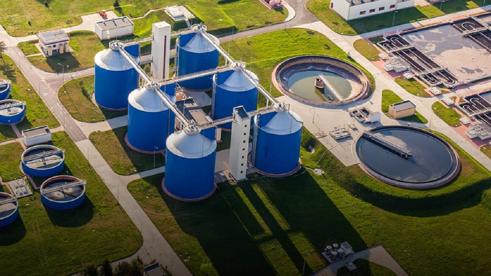

O saneamento básico é um conjunto de serviços oferecidos pelo governo do país para o desenvolvimento socioeconômico de uma região tais como abastecimento de água, esgotamento sanitário, limpeza urbana, drenagem urbana, manejos de resíduos sólidos e de águas pluviais.
De uma forma geral, a cadeia do saneamento tem início na captação em reservatórios de água, onde acontece o tratamento e distribuição aos pontos de consumo, sejam eles residenciais ou industriais. O descarte em seguida, é feito por uma rede de esgoto, que direciona os resíduos para tratamento. Assim o ciclo tem fim quando a água tratada é devolvida à natureza e ao ciclo natural.
O saneamento básico contribui com muitas coisas importantes na vida das pessoas, como na saúde, educação, meio ambiente e economia. Com a modernização e ampliação do sistema de saneamento básico beneficia, em qualquer lugar do mundo, a sociedade como um todo: as empresas, o país, as cidades e o desenvolvimento social e econômico.

A Alemanha usa o modelo de PPPs que seria as (Parcerias Público-Privadas) foi responsável pela universalização de diversos países do mundo. Na Alemanha, aproximadamente 99% da população tem acesso ao saneamento básico e as empresas privadas possuem 40% de participação no setor. Outro país que também usa desse modelo é o Chile, que a iniciativa privada é responsável por 94% do atendimento da população urbana, e com um índice de tratamento de esgoto próximos dos 100%, segundo um levantamento feito pela Confederação Nacional da Indústria (CNI), mas também nem sempre o modelo é sinônimo de sucesso. Por um estudo feito em 2017 no Instituto Transnacional (TNI), que mantém o site Water Remunicipalisation Tracker, em parceria com o Observatório Corporativo Europeu, mostrou que ocorreram 265 casos de rentabilização de saneamento entre 2000 e 2015. As medidas foram observadas em 37 países e afetaram cerca de 100 milhões de pessoas
Berlim, mesmo sendo um dos casos mais emblemáticos, depois de privatizar metade do setor, em 1999, a maior cidade da Alemanha, realizou um referendo em 2011, e devolveu o serviço para o setor público dois anos mais tarde. Segundo o estudo, dois motivos levaram os governantes a reestatizar o saneamento básico: retomar o controle da economia e da água em nível local e baratear a conta para a população. Paris (França), Budapeste (Hungria), Bamako (Mali), Buenos Aires ( Argentina), Maputo (Moçambique) e La Paz (Bolívia) estão entre as grandes cidades que optaram por esse caminho.

Por conta do rígido sistema de tratamento de esgoto, reduziu a poluição de rios alemães, que hoje são próprios para banho. Estações de tratamento garantem a purificação da água, que se torna própria para consumo humano. Até algumas décadas atrás, os rios alemães estavam extremamente contaminados com resíduos tóxicos de indústrias. Quem sentia o cheiro mal e via a péssima qualidade de água não poderia imaginar que , alguns anos mais tarde, seria possível nadar e ver peixes em rios que cortam cidades industriais e onde circulam muitas embarcações.
A criação de um Ministério do Meio Ambiente, em 1986, foi crucial para acabar com o círculo vicioso de poluição dos rios alemães. Leis duras foram estabelecidas, forçando empresas do ramo industrial a implementar alternativas ecológicas. Mas, para mobilizar as autoridades a tomarem as medidas cabíveis, foram necessários muitos protestos, boa parte organizada por Greenpeace, e até desastres naturais, como o incêndio numa empresa química de Basileia que matou muitos peixes ao longo de 400 quilômetros no rio Reno.
A indústria passou a tratar os resíduos industriais e a implementar processos de produção que respeitam o meio-ambiente. Uma das principais medidas para frear a poluição da água foi a construção de inúmeras estações de tratamento, onde o esgoto é tratado com a ajuda de bactérias. A água residual tratada nas Kläranlage pode até servir para o consumo humano, com alto índice de pureza. As estações de tratamento podem ser vistas perto de cidades e regiões de plantação de uvas. A água suja e marrom vinda dos esgotos residenciais e industriais pode ser vista em enormes tanques, onde é limpa, como exige a legislação ambiental alemã. Os resíduos após a purificação são devolvidos para os rios.
Várias cidades alemãs, como Hamburgo, usam o biogás para gerar eletricidade a partir das estações de tratamento de esgoto, o que ajuda a reduzir os custos operacionais das companhias de saneamento. Os contribuintes pagam altos impostos pelo serviço de tratamento de esgoto, que já estão incluídos na conta de água. Na Alemanha, paga-se pela água consumida, pela água de esgoto e pela água da chuva que não é absorvida no terreno de casa. A cobrança é feita por lançamento de efluentes, ou seja, o contribuinte paga pela água que é direcionada ao sistema público de coleta de esgoto. Quem adota um sistema de reutilização da água da chuva pode ter descontos nas contas.
Ao mesmo tempo em que é uma meca da reciclagem, a Alemanha é também a número um na produção per capita de embalagens na Europa. E tentar evitar essa montanha de lixo é mais difícil do que parece. Os alemães são conhecidos como ávidos separadores de lixo e por reciclarem meticulosamente na maneira certa diversos tipos dele. De fato, o país é um dos campeões de reciclagem no mundo, reutilizando cerca de metade de seus resíduos.
No entanto, alguns números recentes da organização ambiental alemã Deutsche Umwelthilfe (DUH) mostram que a Alemanha também é boa, até demais, na produção de lixo. De acordo com a DUH, cada cidadão produz uma média de 213 quilos de resíduos de embalagens por ano, ou mais de 600 gramas por dia. Colocando em comparação com outros países próximos como a França (185 quilos), Áustria (150 quilos) e Suécia (109 quilos, a Alemanha ocupa o primeiro lugar na Europa em embalagens postas no lixo.
E o problema está aumentando: os resíduos de embalagens cresceram 13% no país, na última década, refletindo uma tendência mundial. Mas, enquanto as empresas lucram com mais embalagens, o governo está lutando para conter a crescente quantidade de resíduos por meio de regulamentações.
Em base com o estudo do Instituto do Clima, Meio Ambiente e Energia de Wuppertal, as empresas poderiam reduzir fácil e imediatamente os recursos utilizados em embalagens em 20% simplesmente mudando a forma de empacotamento, apertando mais os rolos. Outra ação voluntária das empresas para reduzir o desperdício é a proibição de sacos plásticos. Desde 1º de junho, os supermercados Rewe, a segunda maior cadeia do país, baniram os sacos plásticos de suas lojas. A rede calcula que serão menos 140 milhões de sacos plásticos usados. Embora com medidas menos drásticas, 240 redes alemãs também se comprometeram a cobrar um valor pela sacola de plástico a partir de julho de 2016. No entanto, os sacos de papel que a rede Rewe e outros supermercados e drogarias continuam oferecendo não são muitos melhores para o meio ambiente e podem, em parte, ser até mais nocivos, já que sua produção emprega recursos significativos.
A água é imprescindível para a vida. Mesmo assim, ela está se tornando cada vez mais escassa. Como o governo federal alemão e a sociedade civil se engajam, para que as pessoas de todo o mundo possam ter acesso à água limpa. Algumas iniciativas foram tomadas pelo governo.
REDE WASH
Wash significa água, saneamento básico e higiene. Os associados desta rede, cerca de 20 organizações não governamentais alemãs, pretendem salientar o significado desses temas. Por isso, comemorando o Dia Mundial da Água e o Dia Mundial do Banheiro, eles organizam todo ano ações em diversas cidades alemãs.
RIGHT 2 WATER
A iniciativa civil europeia Right 2 Water exige que todas as pessoas tenham acesso à água e ao saneamento básico. Ela também quer evitar que a água se torne objeto de interesses comerciais e especulações financeiras. Seus associados lutam para que a União Europeia se engaje mais para conseguir esses objetivos.
GLOBAL WATER PARTNERSHIP
Quanto ao tema da água, a Alemanha participa ativamente em diversas iniciativas internacionais, como a UN Water ou a Global Water Partnership. Essa rede ajuda todo Estado a melhorar sua política hídrica, transmitindo importantes conhecimentos e deixando claro que o crescimento econômico e um abastecimento seguro de água são temas inseparáveis.
WATER INTEGRITY NETWORK
Muitas pessoas não têm acesso à água potável limpa e muitos agricultores de inúmeras regiões do mundo não podem irrigar suficientemente seus campos de plantação. Além disso, existe muita corrupção na economia hídrica, o que dificulta ainda mais o abastecimento. A rede internacional WATER INTEGRITY NETWORK luta por mais transparência nesse ramo. A Alemanha apoia essa organização, que tem seu escritório em Berlim.
Webinar-Brasil-Alemanha sobre tecnologias e soluções para a economia de Saneamento Básico.
O que é Webinar?
Um webinário (ou ainda Webinar, que em inglês é abreviação de "web-based seminar", ou "seminário através da web") é uma webconferência ou videoconferência com intuito educacional, no qual a comunicação é de apenas uma via, ou seja, somente o palestrante se expressa e as outras assistem (semelhante a vídeo-aulas), onde a interação dos participantes é limitada ao chat Q&A, de modo que eles podem conversar entre si ou enviar perguntas ao palestrante.
O webinar pode ocorrer tanto através de uma aplicação específica, instalada em cada um dos computadores participantes, quanto por meio de uma plataforma web que opera dentro do navegador, bastando digitar o endereço do site onde o webinar é transmitido, sendo, na maioria das vezes, necessário um cadastro prévio.
O webinar germano-brasileiro sobre tecnologias e soluções ecológicas para a gestão de água potável e águas residuais foi realizado em 08.12.2020. Entre os palestrantes estavam Thomas Deutzmann, Chefe do Fórum Regional América Latina da German Water Partnership e.V., Dr. Klaus Nelting, Diretor Geral da Áquea & Waste International, Daniel Engel e Ana Luci Limonta Grizzi do Veirano Advogados, Karla Bertocco, Assessora da Semi-State Water and Wastewater Company do Rio Grande do Sul e ex-CEO da Sabesp, e Carla Carneiro, Chefe do Departamento de Assuntos Internacionais do Ministério Federal para o Desenvolvimento Regional no Brasil. O discurso de boas-vindas foi dado pela Sra. Nilgün Parker, Chefe da Divisão Política Financeira Sustentável, Meio Ambiente e Promoção do Comércio Exterior BMU (Ministério Federal do Meio Ambiente).
O webinar focou na viabilidade de encontrar soluções e melhorias no campo da água potável e da gestão de águas residuais no Brasil. Dos diferentes departamentos, leis, fornecedores de tecnologias e partes interessadas, uma implementação de medidas no Brasil foi vista como positiva. Por trás disto estão, por um lado, as mudanças legais no Brasil e uma forte necessidade de água potável e tratamento de águas residuais, bem como investimentos e modernizações neste campo. Especialmente as comunidades e municípios menores têm uma grande necessidade nesta área.